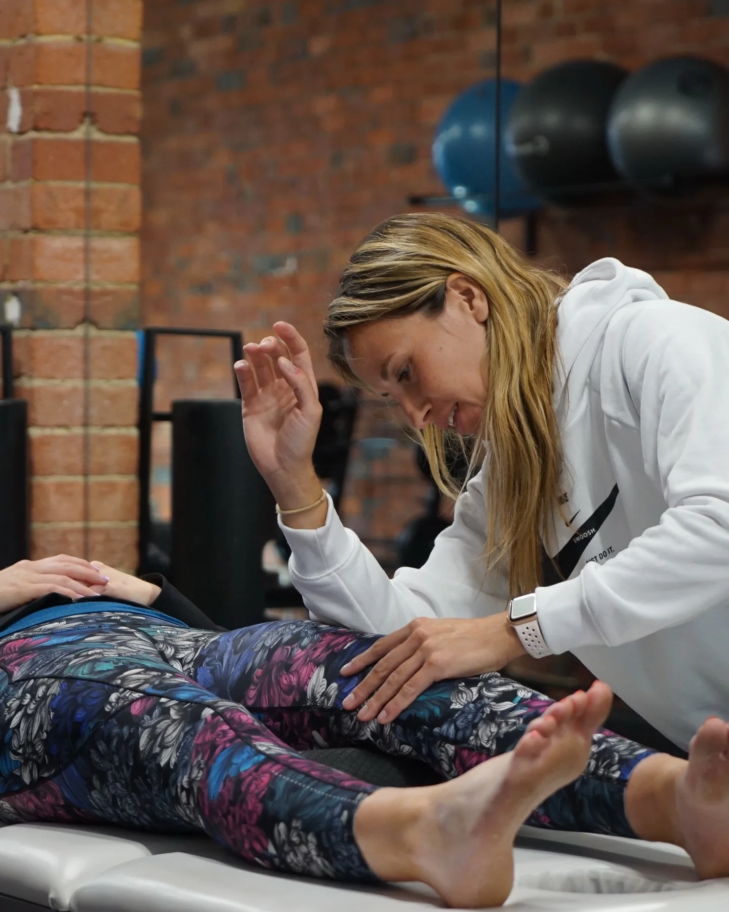

Darren
Movement & trainingIndividual attention, practical coaching and a plan with your life in mind.

Step out of the rush. Find thoughtful training, hands-on care and people who take the time to understand you.
A place to pay attention to your body, rather than work against it. Darren and Emma bring together personal training and remedial massage, with space for your questions.

One-to-one training built around your movement, your starting point and the things you want to keep doing.
Remedial massage with room to talk, slow down and receive individual attention.
You don’t have to know the right service. A first conversation can help you find a comfortable starting point.
Your goals, your questions, and what you’d like to feel more confident doing.
Your trainer or therapist will explain the session and work within your comfort.
Leave with an understanding of what comes next, rather than a list of things to remember.
Proposed first-visit experience, for Darren and Emma to approve.

A small studio. A personal relationship.
Care that doesn’t feel like a conveyor belt.
Individual attention, practical coaching and a plan with your life in mind.

Thoughtful hands-on care and space to listen to what your body needs.
The companion keeps your session, your trainer’s notes and your videos together. A quiet check-in helps your trainer understand the week you’ve had.
Explore the companion ↗Next: a session with your trainer.
Your plan is right here.

How are you arriving today?
Ready · Taking it gently · Let’s talk
No starting level is assumed in this proposed experience. Talk with the team about your current activity and goals so they can advise on a suitable first visit.
For training, comfortable clothing and your questions are a good starting point. Confirm any specific preparation with the studio when booking.
Speak with Darren or Emma first. This demo doesn’t assess symptoms or recommend treatment.
No. This is a design proposal. Sample appointments stay in this browser. The current TR website is linked in the footer for real bookings.